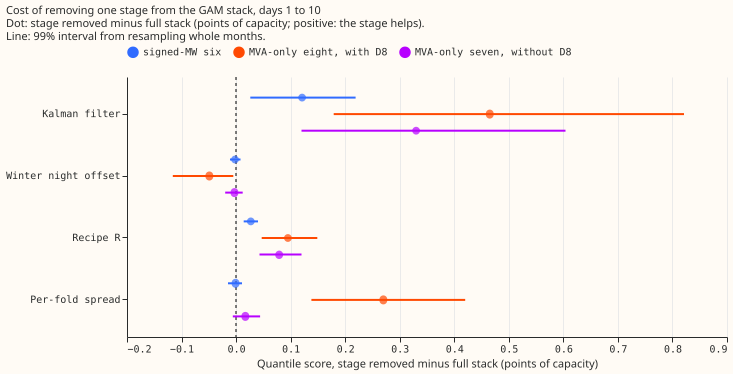
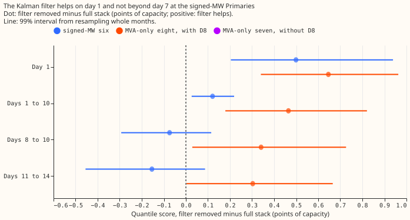
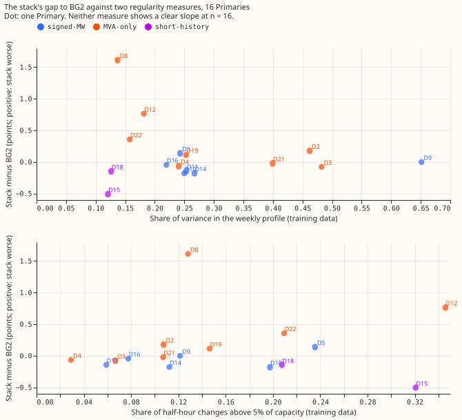

The GAM stack taken apart at all 16 Primaries, and why it is jagged
Two stages of the GAM stack carry its score and two do not. A Primary is a 33 kV to 11 kV substation. The labels D2 to D22 are the study's anonymised labels, and they are not consecutive because the study covers 16 of the 22 substations in the original numbering. We took apart the forecasting pipeline (the "stack") that experiment 377 scored. Stage 1 is a generalised additive model (GAM) per Primary with a Kalman filter that corrects it from recent errors. Stage 2 is a winter night offset (a fixed correction to winter night-time forecasts), recipe R (a 14-day error profile subtracted from the forecast), and quantile bands whose width is refitted each month on earlier months. We removed one stage at a time and scored what remained against BG2, the best-guess forecast of experiment 87, a blend of five forecasts that production does not run. We also built the stack up from the plain GAM, and asked whether the stack does worse at the Primaries whose demand is less regular.
A score is the quantile score: twice the mean pinball loss over 11 quantiles, which equals the continuous ranked probability score (CRPS) up to the estimation from 11 quantiles. The unit is percentage points of a Primary's effective capacity (the capacity its meter can carry), and a lower score is better. "Signed-MW" Primaries are the 6 that report power in signed megawatts. "MVA-only" Primaries are the 8 that report only apparent power in megavolt-amperes (MVA); every number for those Primaries assumes reactive power is zero. D15 and D18 have under a year of history and are report only. A "step" is a half-hour change in power above 5% of capacity. In the lists below, "positive: the stage helps" means that removing the stage raises the score.



Verdict: partly supported. The Kalman filter and recipe R earn their place under the thresholds pre-registered in this page's front matter. The winter offset and the per-fold spread do not, apart from D8. The regularity hypothesis is not supported at n = 16, and 16 Primaries are too few to refute it.
Results (quantile score, points of effective capacity)
- Arms.
fullis experiment 377's stack, rebuilt; it reproduces the stored quantiles exactly (largest difference 0.0 at all 16 Primaries). Stages: Kalman filter on stage 1's residuals (K), winter night offset (O), recipe R (R), per-fold spread (F). Not in the stack and not ablated: the solar summary S, the correction network H, and the daylight heuristic blend. - Absolute scores, days 1 to 10, mean over Primaries (full, plain GAM, BG2, manual heuristic, climatology). Signed-MW six: 2.95, 3.32, 3.02, 3.61, 3.83. MVA-only eight: 4.14, 4.87, 3.78, 4.41, 4.86. D15 and D18 (report only): 7.67, 19.98, 8.00, 13.30, 26.65. Pooled full minus BG2 (99%): -0.07 (-0.28 to +0.14) signed-MW; +0.34 (+0.09 to +0.60) MVA-only; +0.18 (-0.02 to +0.39) without D8. The plain GAM minus BG2: +0.30 (+0.07 to +0.54), +1.05 (+0.73 to +1.39), +0.61 (+0.38 to +0.90).
- Removing one stage (positive: the stage helps), days 1 to 10, 99% interval (signed-MW six; MVA-only eight with D8; MVA-only seven without D8). K: +0.121 (+0.026 to +0.219); +0.465 (+0.179 to +0.821); +0.330 (+0.120 to +0.604). O: -0.002 (-0.011 to +0.008); -0.049 (-0.116 to -0.005); -0.003 (-0.020 to +0.012). R: +0.027 (+0.014 to +0.040); +0.095 (+0.047 to +0.149); +0.079 (+0.043 to +0.120). F (stage 1 tuning-month spread instead): -0.001 (-0.015 to +0.011); +0.270 (+0.138 to +0.420); +0.017 (-0.006 to +0.044). At D8 the per-fold arm is the own-residual spread and the replacement is the donor spread, so the +0.270 is D8's own effect of +2.21 (95% +1.37 to +3.12), averaged over eight Primaries, and not a general spread effect.
- Thresholds from the plan. K (0.05): earns its place at both groups with D8; at the signed-MW six the point estimate is +0.12 and mostly comes from day 1. O (0.02): does not. R (0.02): earns its place at the MVA-only Primaries (+0.08 to +0.10) and at the signed-MW six (+0.027, just over the threshold, interval +0.014 to +0.040). F (0.02): does not outside D8.
- Build-up (negative: the added stage helps), days 1 to 10 (signed-MW; MVA-only with D8; without D8). Adding F to the plain GAM: -0.001, -0.266, -0.039. Adding K: -0.328 (-0.466 to -0.193), -0.397, -0.293. Adding O: -0.011 (-0.031 to +0.008), +0.048 (-0.022 to +0.154), -0.022. Adding R: -0.027 (-0.040 to -0.014), -0.095, -0.079. The filter is the largest single step by far.
- The Kalman filter by lead, filter removed minus full (signed-MW; MVA-only with D8). Day 1: +0.499 (+0.204 to +0.939); +0.646 (+0.340 to +0.963). Days 8 to 10: -0.074 (-0.293 to +0.115); +0.341 (+0.029 to +0.726). Days 11 to 14: -0.154 (-0.455 to +0.087); +0.303 (+0.003 to +0.666).
- Leave one Primary out (95%). K stays positive and excludes zero whichever Primary is left out (signed-MW +0.075 to +0.150; MVA-only +0.330 to +0.524). R stays positive (+0.025 to +0.030; +0.079 to +0.107). O never excludes zero at the signed-MW six.
- Slices, days 1 to 10, full against filter removed (signed-MW; MVA-only). Sunny daylight 4.49 against 4.27; 5.68 against 5.72. Sunny April to June 4.38 against 4.20; 5.58 against 5.53. Cold nights 4.18 against 4.94; 3.30 against 4.27. Christmas 4.38 against 4.20; 3.41 against 3.81. The filter makes the sunny-half-hour and Christmas scores worse at the signed-MW six, the slices where the stack trails BG2 (4.00 and 3.72 for BG2 on sunny daylight and Christmas).
- D15 and D18. Without the filter the mean score of D15 and D18 is 17.2 (7.7 with it): D15 30.7 against 12.8, D18 3.6 against 2.5. Without the filter q95 coverage is 0.32 at D15. The unfiltered forecast there is badly biased and the cause was not investigated.
- Jaggedness measures (registered in the plan; readings before 2025-07-01, hand-filtered events excluded). M1: share of variance in a half-hour-of-week profile, 0.12 (D15) to 0.65 (D9). M2: extra share explained by binned temperature, 0.01 (D4) to 0.50 (D3). M3: lag-1 autocorrelation of what remains, 0.84 to 0.98. M4: share of half-hour changes above 5% of capacity, 0.03 (D4) to 0.35 (D12). M5 (reverse-flow share, signed-MW six only) is 0.000 to 0.002.
- Spearman correlation with the gap (stack minus BG2, days 1 to 10), registered sign in brackets. n = 16: M1 -0.02 (-) with permutation p = 0.94; M2 -0.02 (-) p = 0.94; M3 -0.19 (+) p = 0.46; M4 +0.19 (+) p = 0.48; M5 -0.21 (+) n = 6. The decision rule needs M1 at most -0.5 and M4 at least +0.5 with p under 0.025, so H2 is not supported. Leave-one-out ranges: M1 -0.24 to +0.09, M4 +0.04 to +0.39. Post hoc at n = 14 (D15 and D18 dropped): M1 -0.45 (p = 0.105), M4 +0.53 (p = 0.057), leave-one-out M4 +0.45 to +0.74. Both correlations point the registered way, and neither passes the decision rule. D15 (M1 0.12, M4 0.32) and D18 (M1 0.13, M4 0.21) have the stack ahead of BG2 (-0.51 and -0.15), against the registered direction. The gap is large at D8, D12, and D22, which have low weekly-profile shares (0.14, 0.18, 0.16), and at most +0.18 at D3 and D2, which have the highest shares after D9 (0.48 and 0.46); D9, with the highest share (0.65), has zero gap.
- Placebo. Time-shuffled readings give M1 to M3 near zero (0.003, 0.0002, 0.00) and M4 near 0.82 (every Primary), so the measures read time structure. M1 is inflated on short histories (shuffled M1 is 0.57 at D15, 0.41 at D18, 0.03 at D9), so D15 and D18 are unreliable for M1 and the n = 14 rows are the cleaner test.
Tail measures and curtailment cost
- Tail calibration, days 1 to 10, mean over Primaries (coverage q01, q05, q95, q99; pinball q05, q95). Signed-MW: full 0.022, 0.067, 0.946, 0.982; 0.773, 0.815. Filter removed 0.014, 0.046, 0.917, 0.968; 0.725, 0.914. Plain GAM 0.011, 0.036, 0.875, 0.952; 0.756, 1.007. BG2 0.010, 0.045, 0.932, 0.975; 0.686, 0.882. MVA-only: full 0.021, 0.070, 0.944, 0.982; 1.001, 1.124. Filter removed 0.024, 0.074, 0.928, 0.975. Spread removed 0.036, 0.088, 0.918, 0.963 (D8's donor spread and the stage 1 spread are narrow in both tails). BG2 0.005, 0.042, 0.955, 0.995. The stack's upper tail is better than BG2's at the signed-MW six (pinball q95 0.815 against 0.882) and its lower tail worse (q05 coverage 0.067 against 0.045). The full per-Primary table is below.
- Avoidable curtailment cost, signed-MW six, limit 0.9 of the earlier maximum, in pounds (full, filter removed, plain GAM, BG2, manual heuristic). All rows: 4.24 million, 10.09 million, 10.59 million, 7.31 million, 10.41 million. Event rows (D5, D10, D14, D16 only; D9 and D11 have no scored half-hour above the limit): 2.81 million, 7.55 million, 7.80 million, 5.24 million, 6.88 million. The 7 days after events: 0.343 million, 0.226 million, 0.234 million, 0.285 million, 0.496 million.
- At limit 0.5 (same order). All rows: 59.8 million, 85.2 million, 98.2 million, 72.9 million, 104.8 million. Event rows: 7.75 million, 22.99 million, 27.41 million, 11.96 million, 18.28 million. The 7 days after events: 3.25 million, 2.67 million, 3.09 million, 4.07 million, 3.57 million. The filter lowers the cost on all rows and during events. In the 7 days after events it raises the total at both limits, mostly at D16 at limit 0.9 (£45,000 without the filter against £155,000 with it) and with mixed signs by Primary at limit 0.5, which agrees with experiment 367's finding that the Kalman transient adds error after a step.
- No input is nulled in this experiment, so there are no nulled rows to compare.
Per-Primary tail measures, days 1 to 10
Coverage and pinball loss at q01, q05, q95, and q99, for the full stack, the stack without the Kalman filter, and BG2.
| Primary | arm | cov q01 | cov q05 | cov q95 | cov q99 | pin q01 | pin q05 | pin q95 | pin q99 |
|---|---|---|---|---|---|---|---|---|---|
| D2 | full | 0.013 | 0.063 | 0.943 | 0.984 | 0.153 | 0.578 | 0.641 | 0.186 |
| D2 | no filter | 0.010 | 0.038 | 0.895 | 0.968 | 0.154 | 0.597 | 0.650 | 0.184 |
| D2 | bg2 | 0.002 | 0.030 | 0.953 | 0.993 | 0.199 | 0.501 | 0.564 | 0.279 |
| D3 | full | 0.026 | 0.072 | 0.951 | 0.986 | 0.146 | 0.445 | 0.433 | 0.130 |
| D3 | no filter | 0.045 | 0.114 | 0.972 | 0.992 | 0.179 | 0.494 | 0.465 | 0.127 |
| D3 | bg2 | 0.008 | 0.055 | 0.982 | 0.998 | 0.174 | 0.432 | 0.488 | 0.294 |
| D4 | full | 0.027 | 0.078 | 0.937 | 0.980 | 0.172 | 0.599 | 0.669 | 0.211 |
| D4 | no filter | 0.017 | 0.066 | 0.911 | 0.968 | 0.135 | 0.529 | 0.738 | 0.239 |
| D4 | bg2 | 0.005 | 0.047 | 0.933 | 0.989 | 0.163 | 0.506 | 0.761 | 0.286 |
| D5 | full | 0.037 | 0.087 | 0.927 | 0.975 | 0.458 | 1.180 | 1.110 | 0.377 |
| D5 | no filter | 0.032 | 0.067 | 0.867 | 0.953 | 0.398 | 1.126 | 1.134 | 0.336 |
| D5 | bg2 | 0.001 | 0.044 | 0.921 | 0.983 | 0.349 | 0.924 | 1.128 | 0.429 |
| D8 | full | 0.018 | 0.059 | 0.934 | 0.970 | 0.574 | 2.148 | 2.591 | 0.786 |
| D8 | no filter | 0.023 | 0.067 | 0.918 | 0.954 | 0.640 | 2.305 | 3.380 | 1.327 |
| D8 | bg2 | 0.002 | 0.041 | 0.939 | 0.997 | 0.380 | 1.794 | 1.806 | 0.449 |
| D9 | full | 0.015 | 0.066 | 0.951 | 0.987 | 0.168 | 0.593 | 0.651 | 0.185 |
| D9 | no filter | 0.013 | 0.058 | 0.947 | 0.981 | 0.158 | 0.591 | 0.718 | 0.214 |
| D9 | bg2 | 0.010 | 0.047 | 0.942 | 0.985 | 0.168 | 0.544 | 0.644 | 0.189 |
| D10 | full | 0.012 | 0.051 | 0.979 | 0.996 | 0.202 | 0.738 | 1.005 | 0.265 |
| D10 | no filter | 0.006 | 0.029 | 0.979 | 0.996 | 0.196 | 0.721 | 0.994 | 0.260 |
| D10 | bg2 | 0.008 | 0.036 | 0.955 | 0.978 | 0.214 | 0.729 | 1.100 | 0.367 |
| D11 | full | 0.010 | 0.050 | 0.956 | 0.991 | 0.182 | 0.620 | 0.587 | 0.155 |
| D11 | no filter | 0.005 | 0.034 | 0.945 | 0.988 | 0.168 | 0.617 | 0.607 | 0.161 |
| D11 | bg2 | 0.011 | 0.041 | 0.940 | 0.985 | 0.185 | 0.610 | 0.645 | 0.171 |
| D12 | full | 0.023 | 0.077 | 0.939 | 0.981 | 0.489 | 1.760 | 2.042 | 0.578 |
| D12 | no filter | 0.039 | 0.120 | 0.956 | 0.990 | 0.479 | 1.761 | 2.311 | 0.590 |
| D12 | bg2 | 0.003 | 0.048 | 0.958 | 0.998 | 0.318 | 1.432 | 1.826 | 0.615 |
| D14 | full | 0.016 | 0.061 | 0.950 | 0.987 | 0.162 | 0.577 | 0.529 | 0.145 |
| D14 | no filter | 0.010 | 0.034 | 0.883 | 0.958 | 0.173 | 0.632 | 0.666 | 0.207 |
| D14 | bg2 | 0.010 | 0.039 | 0.923 | 0.972 | 0.184 | 0.586 | 0.614 | 0.195 |
| D15 | full | 0.058 | 0.120 | 0.827 | 0.945 | 1.153 | 3.231 | 4.210 | 1.302 |
| D15 | no filter | 0.000 | 0.000 | 0.319 | 0.604 | 0.865 | 3.836 | 18.564 | 7.446 |
| D15 | bg2 | 0.001 | 0.023 | 0.873 | 0.993 | 0.710 | 2.698 | 3.384 | 0.762 |
| D16 | full | 0.042 | 0.086 | 0.911 | 0.956 | 0.359 | 0.928 | 1.006 | 0.488 |
| D16 | no filter | 0.017 | 0.053 | 0.881 | 0.935 | 0.187 | 0.661 | 1.364 | 0.821 |
| D16 | bg2 | 0.019 | 0.061 | 0.910 | 0.950 | 0.231 | 0.722 | 1.161 | 0.590 |
| D18 | full | 0.010 | 0.045 | 0.958 | 0.989 | 0.210 | 0.647 | 0.681 | 0.211 |
| D18 | no filter | 0.002 | 0.009 | 0.780 | 0.919 | 0.245 | 0.849 | 1.126 | 0.383 |
| D18 | bg2 | 0.000 | 0.017 | 0.981 | 1.000 | 0.399 | 0.611 | 0.719 | 0.385 |
| D19 | full | 0.024 | 0.079 | 0.944 | 0.983 | 0.226 | 0.795 | 0.903 | 0.275 |
| D19 | no filter | 0.026 | 0.083 | 0.930 | 0.976 | 0.215 | 0.784 | 0.924 | 0.292 |
| D19 | bg2 | 0.010 | 0.052 | 0.955 | 0.991 | 0.229 | 0.701 | 0.830 | 0.314 |
| D21 | full | 0.024 | 0.079 | 0.951 | 0.987 | 0.207 | 0.629 | 0.559 | 0.155 |
| D21 | no filter | 0.025 | 0.088 | 0.948 | 0.986 | 0.203 | 0.640 | 0.553 | 0.148 |
| D21 | bg2 | 0.011 | 0.044 | 0.965 | 0.997 | 0.246 | 0.617 | 0.557 | 0.276 |
| D22 | full | 0.013 | 0.056 | 0.951 | 0.988 | 0.288 | 1.051 | 1.156 | 0.331 |
| D22 | no filter | 0.008 | 0.020 | 0.891 | 0.968 | 0.336 | 1.322 | 1.163 | 0.337 |
| D22 | bg2 | 0.002 | 0.019 | 0.951 | 0.997 | 0.384 | 0.939 | 0.895 | 0.305 |
Checks
- Control. The arm
fullequals experiment 377's stored stack: the largest absolute difference in q50 and q95 is 0.0 at all 16 Primaries on the scored year. - Median minus mean forecast, per site. 0.0 at every Primary and every arm: the stored
meanis the centre of the centred spread tables, so no independent mean-forecast contrast exists. - Predictions. P1 failed on days 1 to 10 (+0.12 and +0.47, not under 0.05) and held on day 1. P2 held at the signed-MW six (+0.027) and failed at the MVA-only eight (+0.095). P3 held at the signed-MW six and failed at the MVA-only eight (-0.049, D8; held without D8, -0.003). P4 held without D8 (+0.017) and failed with it (+0.270, D8's donor spread); q05 coverage worsened at the MVA-only eight (0.070 to 0.088) and moved from 0.067 to 0.064 at the signed-MW six. P5 held at the signed-MW six (+0.37) and failed at the MVA-only eight (+0.73). P6 failed.
- Triggers fired. Trigger 2 (predictions P1 days 1 to 10, P2 and P3 at the MVA-only eight, P5 at the MVA-only eight, and P6 failed, and the MVA-only misses are explained by D8 alone only partly); trigger 5 (the arm without the winter offset beats the full stack at the MVA-only eight, and the arm without the filter beats it at days 8 to 14 at the signed-MW six, within noise). Triggers 1, 3, 4, 6, 7 did not fire.
- Placebos. A permutation placebo (10,000 shuffles of each measure across Primaries) gives the p values above; a time-shuffled-readings placebo gives M1 to M3 near zero.
Caveats and what to try next
- The stack is experiment 377's, without S, H, and the heuristic blend; stage contrasts may differ in default 3, which experiment 378 builds.
- The per-fold spread contrast at D8 compares the own-residual arm with the donor spread, so it reports D8's spread choice and not whether refitting the spread monthly helps.
- D15 and D18 without the filter are badly biased; their contrasts are report only.
- The regularity hypothesis was tested at 16 Primaries with measures M1 to M4 that are not independent of each other. A larger test would use more Primaries or simulated series with set regularity.
- Next: a filter that fades out beyond day 7 (signed-MW days 8 to 14 score better without it), and a stack without the winter offset is a simpler release candidate.
Audit
A fresh Sonnet agent audited the numbers (about 75 quoted numbers, all 384 entries of the per-Primary tail table (16 Primaries, 3 arms, 8 measures), and a re-derivation of four Primaries' scores from the stored arms, which agree within 0.01 and 0.1 at D15) and a second agent reviewed the code. Findings and triage:
- Accepted and fixed: D8's spread effect was misquoted (+2.21, not +1.6); the D15 score of 17.2 is a mean of D15 and D18; BG2's sunny-daylight score is 4.00; the sign conventions were missing from two list headings; P4 was not scored; the claim that the stack trails BG2 where steps are large, "after day 7" and "day 1 only" overstated the evidence; the offset harm is D8's; the post-event curtailment rise is mostly D16. The permutation p value now adds one to numerator and denominator, and the placebo header names which measure is near zero.
- Rejected: the claim that D8's fold months were built from D8's own first reading and cover
about two months. The control prints 219,674 D8 rows for
fulland the stored stack alike. The claim that stage 1's spread may be uncentred: the median minus the mean is 0.0 for every arm, including the arms that keep stage 1's spread.